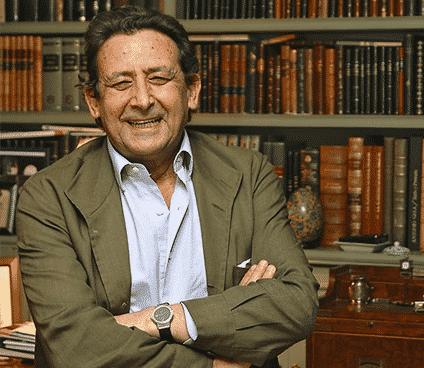

Sinopsis
Una nueva y divertida aventura del marqués de Sotoancho, la primera que publica Planeta.
La madre del marqués murió en el tomo anterior, dejando tranquilo al pobre marqués y haciéndole un hombre mucho más rico de lo que ya era. Pero su muerte no significa que deje de maltratarle como ha venido haciendo desde que él era un niño. Ha dejado un Diario en el que su maldad se hace más evidente, si cabe. El pobre marqués lee el diario cuando sus actividades diarias se lo permiten. Mientras tanto, tiene que organizar una cacería a la que está invitado el juez Garzón y, muy probablemente, el ministro Bermejo. El marqués de Sotoancho es un niño bien y mimado, de la alta aristocracia española, con finca en Andalucía, de los que no ha trabajado en su vida y vive completamente ajeno a la realidad. Pero su vida está llena de estrés y problemas que normalmente vienen producidos por la gente que trabaja para él y por su mujer, mucho más joven que él y guapísima.
Alfonso Ussía hace en estas novelas un retrato jocoso y algo crítico de esta clase social que no sabe ganarse la vida y cuya máxima preocupación es quién invitarán a la próxima cacería.
Biografía

Alfonso de Ussía Muñoz-Seca (Madrid, 12 de febrero de 1948) es un periodista, columnista y escritor español.
Comenzó escribiendo poesía satírica desde muy joven, al tiempo que leía y aprendía casi de forma autodidacta. Estudió en los colegios Alameda de Osuna y Colegio del Pilar. Cursó la carrera de Derecho hasta que se vio obligado a realizar el servicio militar. Dos años después, a su regreso, ingresó en Ciencias de la Información, aunque lo abandonaría al poco tiempo.
Su primer trabajo fue en el Servicio de Documentación del diario vespertino Informaciones, siendo director Jesús de la Serna y subdirector Juan Luis Cebrián. Pronto le publicarían su primer artículo en la revista Sábado Gráfico. Más tarde, y a raíz de otras publicaciones en la revista respaldadas por Eugenio Suárez, Torcuato Luca de Tena le propuso un trabajo en el diario ABC.
Aunque la mayor parte de su carrera como columnista la pasó en el diario ABC, trabajó para los periódicos Diario 16 y Ya, y las revistas Las Provincias, Litoral y El Cocodrilo, siendo director de esta última.
A lo largo de su dilatada carrera como escritor y columnista, ha colaborado también en programas radiofónicos y de televisión, como Protagonistas y La Brújula, ambos en Onda Cero, y Este país necesita un repaso de Telecinco, con Antonio Mingote, Antonio Ozores, Chumy Chúmez, Luis Sánchez Polack (Tip), José Luis Coll y Miguel Durán de compañeros. Además ideó las series de televisión El marqués de Sotoancho (2000) y Puerta con puerta (1999).
Ha creado, además, numerosos personajes humorísticos, como Floro Recatado (un entrenador de fútbol argentino), el doctor Gorroño, don Juan Pineda y Jeremías Aguirre (un revolucionario sandinista), a los que pone voz en la radio. Pero sin duda alguna su personaje más relevante y conocido es el marqués de Sotoancho, un peculiar señorito de la Baja Andalucía al que da vida en sus obras junto a la marquesa viuda y el servicio de La Jaralera, una residencia ficticia ubicada entre las provincias de Cádiz y Sevilla.
En la actualidad, combina su trabajo de columnista en el diario La Razón, Neupic y el semanario Tiempo con las tertulias del programa radiofónico La Mañana en la cadena COPE. En la temporada 2012-2013 deja esta tertulia.
Recientemente ha participado en un libro promovido por Vox contra la Ley de la memoria histórica titulado "Memoria histórica", amenaza para la paz en Europa, editado por el Grupo de los Conservadores y Reformistas Europeos del Parlamento Europeo, en el que está encuadrado Vox, y en el que también han participado destacados miembros de este partido como Hermann Tertsch y Francisco José Contreras.